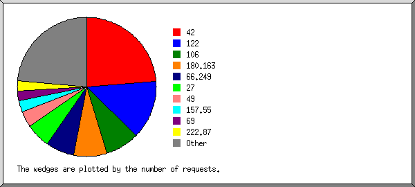
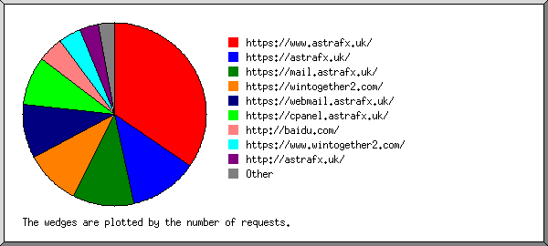
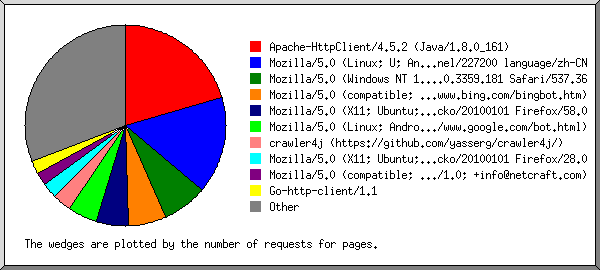
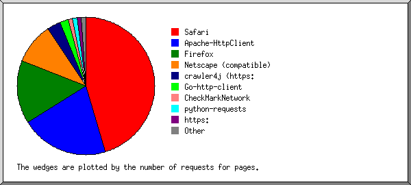
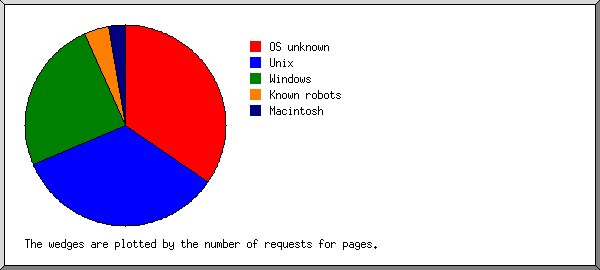
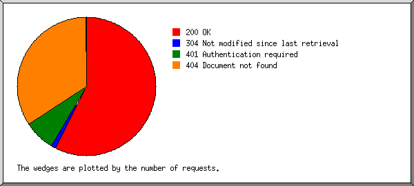
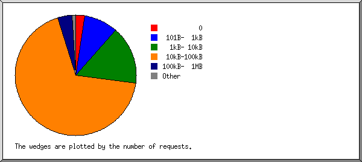
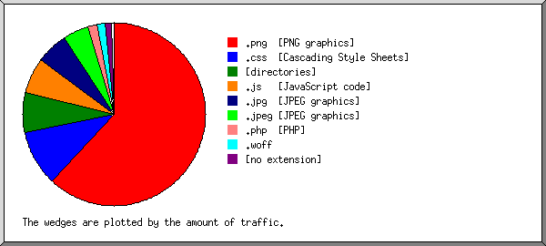
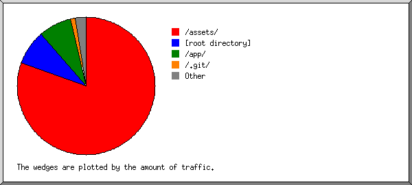
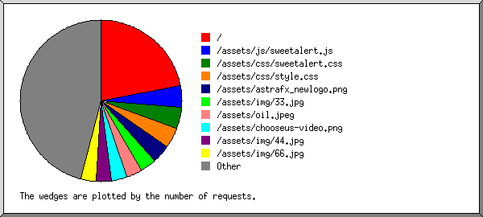

Web Server Statistics for astrafx.uk
Web Server Statistics for astrafx.uk
Program started on Mon, Sep 28 2020 at 4:56 PM.
Analyzed requests from Fri, Aug 28 2020 at 8:44 PM to Mon, Sep 28 2020 at 4:26 PM (30.82 days).
Web Server Statistics for astrafx.ukProgram started on Mon, Sep 28 2020 at 4:56 PM.
Analyzed requests from Fri, Aug 28 2020 at 8:44 PM to Mon, Sep 28 2020 at 4:26 PM (30.82 days).
(Go To: Top | General Summary | Monthly Report | Daily Summary | Hourly Summary | Domain Report | Organization Report | Failed Referrer Report | Referring Site Report | Browser Report | Browser Summary | Operating System Report | Status Code Report | File Size Report | File Type Report | Directory Report | Request Report)
Figures in parentheses refer to the 7-day period ending Sep 28 2020 at 4:56 PM.
Successful requests: 874 (68)
Average successful requests per day: 28 (9)
Successful requests for pages: 194 (35)
Average successful requests for pages per day: 6 (4)
Failed requests: 624 (23)
Distinct files requested: 121 (263)
Distinct hosts served: 169 (278)
Data transferred: 42.76 megabytes (3.04 megabytes)
Average data transferred per day: 1.39 megabytes (444.12 kilobytes)
(Go To: Top | General Summary | Monthly Report | Daily Summary | Hourly Summary | Domain Report | Organization Report | Failed Referrer Report | Referring Site Report | Browser Report | Browser Summary | Operating System Report | Status Code Report | File Size Report | File Type Report | Directory Report | Request Report)
Each unit ( ) represents 5 requests for pages or part thereof.
) represents 5 requests for pages or part thereof.
| month | #reqs | #pages | |
|---|---|---|---|
| Aug 2020 | 126 | 23 |  |
| Sep 2020 | 748 | 171 |   |
Busiest month: Sep 2020 (171 requests for pages).
(Go To: Top | General Summary | Monthly Report | Daily Summary | Hourly Summary | Domain Report | Organization Report | Failed Referrer Report | Referring Site Report | Browser Report | Browser Summary | Operating System Report | Status Code Report | File Size Report | File Type Report | Directory Report | Request Report)
Each unit () represents 2 requests for pages or part thereof.
| day | #reqs | #pages | |
|---|---|---|---|
| Sun | 127 | 57 |   |
| Mon | 125 | 25 | |
| Tue | 114 | 27 | |
| Wed | 87 | 16 | |
| Thu | 181 | 18 | |
| Fri | 69 | 14 | |
| Sat | 171 | 37 | |
(Go To: Top | General Summary | Monthly Report | Daily Summary | Hourly Summary | Domain Report | Organization Report | Failed Referrer Report | Referring Site Report | Browser Report | Browser Summary | Operating System Report | Status Code Report | File Size Report | File Type Report | Directory Report | Request Report)
Each unit () represents 2 requests for pages or part thereof.
| hour | #reqs | #pages | |
|---|---|---|---|
| 0 | 16 | 1 | |
| 1 | 36 | 9 | |
| 2 | 18 | 2 | |
| 3 | 4 | 2 | |
| 4 | 26 | 6 | |
| 5 | 21 | 10 | |
| 6 | 149 | 52 | |
| 7 | 44 | 24 | |
| 8 | 74 | 14 | |
| 9 | 74 | 6 | |
| 10 | 26 | 7 | |
| 11 | 29 | 3 | |
| 12 | 59 | 3 | |
| 13 | 23 | 2 | |
| 14 | 12 | 9 | |
| 15 | 36 | 6 | |
| 16 | 31 | 5 | |
| 17 | 20 | 3 | |
| 18 | 27 | 8 | |
| 19 | 21 | 4 | |
| 20 | 58 | 7 | |
| 21 | 26 | 4 | |
| 22 | 3 | 0 | |
| 23 | 41 | 7 | |
(Go To: Top | General Summary | Monthly Report | Daily Summary | Hourly Summary | Domain Report | Organization Report | Failed Referrer Report | Referring Site Report | Browser Report | Browser Summary | Operating System Report | Status Code Report | File Size Report | File Type Report | Directory Report | Request Report)
Listing domains, sorted by the amount of traffic.
| #reqs | %bytes | domain |
|---|---|---|
| 874 | 100% | [unresolved numerical addresses] |
(Go To: Top | General Summary | Monthly Report | Daily Summary | Hourly Summary | Domain Report | Organization Report | Failed Referrer Report | Referring Site Report | Browser Report | Browser Summary | Operating System Report | Status Code Report | File Size Report | File Type Report | Directory Report | Request Report)

Listing the top 20 organizations by the number of requests, sorted by the number of requests.
| #reqs | %bytes | organization |
|---|---|---|
| 208 | 23.59% | 42 |
| 119 | 18.63% | 122 |
| 69 | 14.07% | 106 |
| 67 | 7.36% | 180.163 |
| 57 | 5.41% | 66.249 |
| 51 | 5.26% | 27 |
| 32 | 3.96% | 49 |
| 24 | 1.14% | 157.55 |
| 20 | 4.77% | 69 |
| 20 | 0.74% | 222.87 |
| 20 | 0.74% | 113 |
| 15 | 2.43% | 40 |
| 15 | 0.07% | 157.49 |
| 14 | 1.08% | 93 |
| 14 | 0.40% | 82 |
| 13 | 4.57% | 65.154 |
| 12 | 1.95% | 207.46 |
| 9 | 0.33% | 34 |
| 7 | 0.39% | 13 |
| 6 | 0.16% | 121 |
| 82 | 2.94% | [not listed: 38 organizations] |
(Go To: Top | General Summary | Monthly Report | Daily Summary | Hourly Summary | Domain Report | Organization Report | Failed Referrer Report | Referring Site Report | Browser Report | Browser Summary | Operating System Report | Status Code Report | File Size Report | File Type Report | Directory Report | Request Report)

Listing referring URLs, sorted by the number of failed requests.
(Go To: Top | General Summary | Monthly Report | Daily Summary | Hourly Summary | Domain Report | Organization Report | Failed Referrer Report | Referring Site Report | Browser Report | Browser Summary | Operating System Report | Status Code Report | File Size Report | File Type Report | Directory Report | Request Report)

Listing referring sites, sorted by the number of requests.
| #reqs | site |
|---|---|
| 216 | https://www.astrafx.uk/ |
| 75 | https://astrafx.uk/ |
| 67 | https://mail.astrafx.uk/ |
| 61 | https://wintogether2.com/ |
| 60 | https://webmail.astrafx.uk/ |
| 55 | https://cpanel.astrafx.uk/ |
| 27 | http://baidu.com/ |
| 26 | https://www.wintogether2.com/ |
| 21 | http://astrafx.uk/ |
| 4 | http://www.astrafx.uk/ |
| 3 | http://cpanel.astrafx.uk/ |
| 3 | http://webmail.astrafx.uk/ |
| 2 | https://colorlib.com/ |
| 1 | http://www.tzsg.net/ |
| 1 | http://www.dpcy.net/ |
| 1 | http://mail.astrafx.uk/ |
| 1 | http://www.google.com.hk/ |
| 1 | http://lztuxo.skfusion.com/ |
(Go To: Top | General Summary | Monthly Report | Daily Summary | Hourly Summary | Domain Report | Organization Report | Failed Referrer Report | Referring Site Report | Browser Report | Browser Summary | Operating System Report | Status Code Report | File Size Report | File Type Report | Directory Report | Request Report)

Listing the top 40 browsers by the number of requests for pages, sorted by the number of requests for pages.
| #reqs | #pages | browser |
|---|---|---|
| 40 | 40 | Apache-HttpClient/4.5.2 (Java/1.8.0_161) |
| 326 | 30 | Mozilla/5.0 (Linux; U; Android 8.1.0; zh-CN; EML-AL00 Build/HUAWEIEML-AL00) AppleWebKit/537.36 (KHTML, like Gecko) Version/4.0 Chrome/57.0.2987.108 baidu.sogo.uc.UCBrowser/11.9.4.974 UWS/2.13.1.48 Mobile Safari/537.36 AliApp(DingTalk/4.5.11) com.alibaba.android.rimet/10487439 Channel/227200 language/zh-CN |
| 14 | 14 | Mozilla/5.0 (Windows NT 10.0; Win64; x64)AppleWebKit/537.36 (KHTML, like Gecko) Chrome/66.0.3359.181 Safari/537.36 |
| 45 | 12 | Mozilla/5.0 (compatible; bingbot/2.0; +http://www.bing.com/bingbot.htm) |
| 10 | 10 | Mozilla/5.0 (X11; Ubuntu; Linux x86_64; rv:58.0) Gecko/20100101 Firefox/58.0 |
| 9 | 9 | Mozilla/5.0 (Linux; Android 6.0.1; Nexus 5X Build/MMB29P) AppleWebKit/537.36 (KHTML, like Gecko) Chrome/85.0.4183.118 Mobile Safari/537.36 (compatible; Googlebot/2.1; +http://www.google.com/bot.html) |
| 14 | 6 | crawler4j (https://github.com/yasserg/crawler4j/) |
| 5 | 5 | Mozilla/5.0 (X11; Ubuntu; Linux i686; rv:28.0) Gecko/20100101 Firefox/28.0 |
| 4 | 4 | Mozilla/5.0 (compatible; NetcraftSurveyAgent/1.0; +info@netcraft.com) |
| 4 | 4 | Go-http-client/1.1 |
| 3 | 3 | Mozilla/5.0 (Windows NT 6.1; rv:57.0) Gecko/20100101 Firefox/57.0 |
| 3 | 3 | Mozilla/5.0 (Linux; Android 5.1.1; SM-J111F) AppleWebKit/537.36 (KHTML, like Gecko) Chrome/73.0.3683.90 Mobile Safari/537.36 |
| 2 | 2 | Mozilla/5.0 (compatible; DuckDuckGo-Favicons-Bot/1.0; +http://duckduckgo.com) |
| 2 | 2 | python-requests/2.24.0 |
| 2 | 2 | Mozilla/5.0 (Windows NT 10.0; Win64; x64) AppleWebKit/537.36 (KHTML, like Gecko) Chrome/78.0.3904.108 Safari/537.36 |
| 2 | 2 | Mozilla/5.0 (Windows NT 6.1; WOW64) AppleWebKit/537.36 (KHTML, like Gecko) Chrome/36.0.1985.125 Safari/537.36 |
| 2 | 2 | Mozilla/5.0 (Windows NT 10.0) AppleWebKit/537.36 (KHTML, like Gecko) Chrome/40.0.2214.93 Safari/537.36 |
| 6 | 2 | Mozilla/5.0 (X11; Ubuntu; Linux x86_64; rv:62.0) Gecko/20100101 Firefox/62.0 |
| 2 | 2 | Mozilla/5.0 (Windows NT 10.0; Win64; x64) AppleWebKit/537.36 (KHTML, like Gecko) Chrome/84.0.4147.89 Safari/537.36 |
| 6 | 2 | CheckMarkNetwork/1.0 (+http://www.checkmarknetwork.com/spider.html) |
| 2 | 2 | https://www.nominet.uk/privacy-notice |
| 2 | 2 | Mozilla/5.0 (Windows NT 10.0; Win64; x64; rv:77.0) Gecko/20100101 Firefox/77.0 |
| 2 | 2 | Mozilla/5.0 (Macintosh; Intel Mac OS X 10_9_3) AppleWebKit/537.36 (KHTML, like Gecko) Chrome/35.0.1916.47 Safari/537.36 |
| 55 | 2 | Mozilla/5.0 (Windows NT 6.1; rv:80.0) Gecko/20100101 Firefox/80.0 |
| 2 | 2 | Mozilla/5.0 (Windows NT 10.0; Win64; x64; rv:79.0) Gecko/20100101 Firefox/79.0 |
| 7 | 1 | Mozilla/5.0 (Linux; Android 6.0.1; Nexus 5X Build/MMB29P) AppleWebKit/537.36 (KHTML, like Gecko) Chrome/80.0.3987.92 Mobile Safari/537.36 (compatible; Googlebot/2.1; +http://www.google.com/bot.html) |
| 1 | 1 | Mozilla/5.0 (X11; Linux x86_64) AppleWebKit/537.36 (KHTML, like Gecko) Chrome/61.0.3163.79 Safari/537.36 |
| 1 | 1 | Mozilla/5.0 (Windows NT 6.2) AppleWebKit/537.36 (KHTML, like Gecko) Chrome/41.0.2224.3 Safari/537.36 |
| 1 | 1 | Mozilla/5.0 (Macintosh; Intel Mac OS X 10_12_1) AppleWebKit/537.36 (KHTML, like Gecko) Chrome/58.0.3029.110 Safari/537.36 |
| 1 | 1 | Mozilla/5.0 (Windows NT 6.1; Win64; x64) AppleWebKit/537.36 (KHTML, like Gecko) Chrome/85.0.4183.102 Safari/537.36 |
| 1 | 1 | Mozilla/5.0 (Windows NT 6.1; WOW64) AppleWebKit/537.36 (KHTML, like Gecko) Chrome/42.0.2311.90 Safari/537.36 |
| 1 | 1 | Mozilla/5.0 (Windows NT 5.1) AppleWebKit/537.36 (KHTML, like Gecko) Chrome/41.0.2224.3 Safari/537.36 |
| 1 | 1 | Mozilla/5.0 (Windows NT 6.1; Win64; x64) AppleWebKit/537.36 (KHTML, like Gecko) Chrome/84.0.4147.125 Safari/537.36 |
| 1 | 1 | Mozilla/5.0 (Windows NT 6.1; WOW64) AppleWebKit/537.36 (KHTML, like Gecko) Chrome/34.0.1847.131 Safari/537.36 |
| 1 | 1 | Mozilla/5.0 (Windows NT 6.1) AppleWebKit/537.36 (KHTML, like Gecko) Chrome/41.0.2228.0 Safari/537.36 |
| 3 | 1 | Mozilla/5.0 (Windows NT 10.0; Win64; x64) AppleWebKit/537.36 (KHTML, like Gecko) Chrome/67.0.3396.87 Safari/537.36 OPR/54.0.2952.51 |
| 1 | 1 | Mozilla/5.0 (Windows NT 6.2; WOW64) |
| 2 | 1 | Mozilla/5.0 (X11; Linux x86_64) AppleWebKit/537.36 (KHTML, like Gecko) Chrome/58.0.3029.110 Safari/537.36 |
| 1 | 1 | Mozilla/4.0 (compatible; MSIE 7.0; Windows NT 6.0; WOW64; SLCC1; .NET CLR 2.0.50727; Media Center PC 5.0; InfoPath.2; .NET CLR 1.1.4322; .NET CLR 3.5.30729; .NET CLR 3.0.30618; FDM) |
| 1 | 1 | Mozilla/5.0 (X11; Linux x86_64) AppleWebKit/537.36 (KHTML, like Gecko) Ubuntu Chromium/34.0.1847.116 Chrome/34.0.1847.116 Safari/537.36 |
| 274 | 13 | [not listed: 27 browsers] |
(Go To: Top | General Summary | Monthly Report | Daily Summary | Hourly Summary | Domain Report | Organization Report | Failed Referrer Report | Referring Site Report | Browser Report | Browser Summary | Operating System Report | Status Code Report | File Size Report | File Type Report | Directory Report | Request Report)

Listing browsers with at least 1 request for a page, sorted by the number of requests for pages.
| # | #reqs | #pages | browser |
|---|---|---|---|
| 1 | 498 | 88 | Safari |
| 493 | 88 | Safari/537 | |
| 2 | 40 | 40 | Apache-HttpClient |
| 40 | 40 | Apache-HttpClient/4 | |
| 3 | 217 | 29 | Firefox |
| 10 | 10 | Firefox/58 | |
| 5 | 5 | Firefox/28 | |
| 85 | 3 | Firefox/80 | |
| 3 | 3 | Firefox/57 | |
| 16 | 3 | Firefox/77 | |
| 6 | 2 | Firefox/62 | |
| 2 | 2 | Firefox/79 | |
| 1 | 1 | Firefox/30 | |
| 4 | 52 | 19 | Netscape (compatible) |
| 5 | 14 | 6 | crawler4j (https: |
| 14 | 6 | crawler4j (https://github | |
| 6 | 4 | 4 | Go-http-client |
| 4 | 4 | Go-http-client/1 | |
| 7 | 6 | 2 | CheckMarkNetwork |
| 6 | 2 | CheckMarkNetwork/1 | |
| 8 | 2 | 2 | python-requests |
| 2 | 2 | python-requests/2 | |
| 9 | 2 | 2 | https: |
| 2 | 2 | https://www | |
| 10 | 5 | 1 | Mozilla |
| 11 | 1 | 1 | MSIE |
| 1 | 1 | MSIE/7 | |
| 21 | 0 | [not listed: 1 browser] |
(Go To: Top | General Summary | Monthly Report | Daily Summary | Hourly Summary | Domain Report | Organization Report | Failed Referrer Report | Referring Site Report | Browser Report | Browser Summary | Operating System Report | Status Code Report | File Size Report | File Type Report | Directory Report | Request Report)

Listing operating systems, sorted by the number of requests for pages.
| # | #reqs | #pages | OS |
|---|---|---|---|
| 1 | 100 | 67 | OS unknown |
| 2 | 420 | 66 | Unix |
| 420 | 66 | Linux | |
| 3 | 285 | 48 | Windows |
| 106 | 29 | Windows NT | |
| 177 | 17 | Unknown Windows | |
| 2 | 2 | Windows XP | |
| 4 | 41 | 8 | Known robots |
| 5 | 16 | 5 | Macintosh |
(Go To: Top | General Summary | Monthly Report | Daily Summary | Hourly Summary | Domain Report | Organization Report | Failed Referrer Report | Referring Site Report | Browser Report | Browser Summary | Operating System Report | Status Code Report | File Size Report | File Type Report | Directory Report | Request Report)

Listing status codes, sorted numerically.
| #reqs | status code |
|---|---|
| 859 | 200 OK |
| 15 | 304 Not modified since last retrieval |
| 110 | 401 Authentication required |
| 513 | 404 Document not found |
| 1 | 4xx [Miscellaneous client/user errors] |
(Go To: Top | General Summary | Monthly Report | Daily Summary | Hourly Summary | Domain Report | Organization Report | Failed Referrer Report | Referring Site Report | Browser Report | Browser Summary | Operating System Report | Status Code Report | File Size Report | File Type Report | Directory Report | Request Report)

| size | #reqs | %bytes |
|---|---|---|
| 0 | 22 | |
| 1B- 10B | 0 | |
| 11B- 100B | 0 | |
| 101B- 1kB | 79 | 0.11% |
| 1kB- 10kB | 136 | 1.60% |
| 10kB-100kB | 595 | 33.40% |
| 100kB- 1MB | 34 | 45.50% |
| 1MB- 10MB | 8 | 19.39% |
(Go To: Top | General Summary | Monthly Report | Daily Summary | Hourly Summary | Domain Report | Organization Report | Failed Referrer Report | Referring Site Report | Browser Report | Browser Summary | Operating System Report | Status Code Report | File Size Report | File Type Report | Directory Report | Request Report)

Listing extensions with at least 0.1% of the traffic, sorted by the amount of traffic.
| #reqs | %bytes | extension |
|---|---|---|
| 205 | 61.75% | .png [PNG graphics] |
| 101 | 10.00% | .css [Cascading Style Sheets] |
| 194 | 7.08% | [directories] |
| 68 | 6.21% | .js [JavaScript code] |
| 106 | 5.73% | .jpg [JPEG graphics] |
| 77 | 4.55% | .jpeg [JPEG graphics] |
| 64 | 1.76% | .php [PHP] |
| 28 | 1.44% | .woff |
| 12 | 1.02% | [no extension] |
| 4 | 0.38% | .woff2 |
| 15 | 0.07% | [not listed: 1 extension] |
(Go To: Top | General Summary | Monthly Report | Daily Summary | Hourly Summary | Domain Report | Organization Report | Failed Referrer Report | Referring Site Report | Browser Report | Browser Summary | Operating System Report | Status Code Report | File Size Report | File Type Report | Directory Report | Request Report)

Listing directories with at least 0.01% of the traffic, sorted by the amount of traffic.
| #reqs | %bytes | directory |
|---|---|---|
| 363 | 80.42% | /assets/ |
| 247 | 8.27% | [root directory] |
| 130 | 7.77% | /app/ |
| 12 | 1.02% | /.git/ |
| 18 | 0.91% | /cPanel_magic_revision_1386192033/ |
| 11 | 0.80% | /cPanel_magic_revision_1594924424/ |
| 9 | 0.45% | /cPanel_magic_revision_1386192031/ |
| 66 | 0.16% | /cPanel_magic_revision_1594922736/ |
| 2 | 0.05% | /admin/ |
| 1 | 0.03% | /phpmyadmin/ |
| 1 | 0.03% | /wordpress/ |
| 1 | 0.03% | /pma/ |
| 1 | 0.03% | /phpMyAdmin/ |
| 1 | 0.03% | /blog/ |
| 11 | 0.01% | /cPanel_magic_revision_1386192030/ |
(Go To: Top | General Summary | Monthly Report | Daily Summary | Hourly Summary | Domain Report | Organization Report | Failed Referrer Report | Referring Site Report | Browser Report | Browser Summary | Operating System Report | Status Code Report | File Size Report | File Type Report | Directory Report | Request Report)

Listing files with at least 20 requests, sorted by the number of requests.
| #reqs | %bytes | last time | file |
|---|---|---|---|
| 192 | 7.03% | Sep/28/20 4:26 PM | / |
| 39 | 3.02% | Sep/28/20 7:53 AM | /assets/js/sweetalert.js |
| 36 | 1.05% | Sep/28/20 7:53 AM | /assets/css/sweetalert.css |
| 36 | 4.89% | Sep/28/20 7:53 AM | /assets/css/style.css |
| 32 | 0.52% | Sep/27/20 6:00 AM | /assets/astrafx_newlogo.png |
| 29 | 0.88% | Sep/26/20 12:12 AM | /assets/img/33.jpg |
| 27 | 1.59% | Sep/28/20 2:20 PM | /assets/oil.jpeg |
| 27 | 41.23% | Sep/26/20 2:10 AM | /assets/chooseus-video.png |
| 27 | 1.07% | Sep/16/20 6:15 AM | /assets/img/44.jpg |
| 27 | 1.86% | Sep/22/20 2:51 PM | /assets/img/66.jpg |
| 26 | 0.63% | Sep/26/20 7:51 PM | /assets/images.jpeg |
| 24 | 2.33% | Sep/27/20 8:26 PM | /assets/index.jpeg |
| 23 | 1.92% | Sep/27/20 8:26 PM | /assets/hqdefault.jpg |
| 329 | 31.98% | Sep/28/20 1:53 PM | [not listed: 76 files] |